Rasmlar tayyor. Endi har sahna uchun: Veo'da «Frames to video» ni oching, shu kartadagi rasmni yuklang (belgilari tozalangan .png fayl), o'lchamni 9:16 qiling va «Nusxa olish» bilan promptni qo'ying (8 s). Har promptning boshida kamera harakati bor, hayajonli joylarda yuz ifodasi yozilgan. Rasm promptlari repoda saqlanadi (rasm_promptlar.py). Narx va raqamlarni montajda o'zimiz yozamiz.
01
1-sahna — 9:16 (tik)
0–6 ssariqto'q ko'kqizil
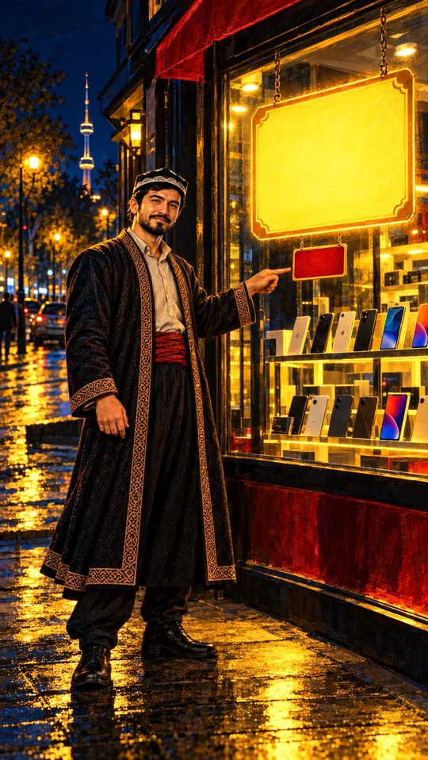
✅ tasdiqlandi · Apple belgilari tozalandi (img/s01.png)
Usta yuzi namunadek (do'ppi, qora soqol, chopon, qizil belbog'), qo'llari yosh, ikki qo'l: biri ko'rsatadi, biri pastda. Sariq yorliq va qizil yorliq bo'sh. Orqada Toshkent teleminorasi. Ranglar: sariq, ko'k, qizil. ChatGPT tahriri belgilarni olib tashlamadi; Claude ularni o'zi tozaladi (OpenCV inpaint). Veo'ga img/s01.png beriladi.
Ovoz
Usta: Oyiga atigi yuz ming. Lekin jami qanchaligini hech kim aytmadi.
Vertical 9:16, 8 seconds. Start from the attached image of scene 1. Camera: Slow push-in from a medium shot toward Usta, ending in a medium close-up of his face with the tiny red card beside him. Action: Usta points at the tiny red card, then slowly turns his head to the camera; his eyes narrow knowingly, one eyebrow lifts and a sly half-smile spreads across his face. Rain drops glitter in the golden window light; the big yellow card glows softly. Keep every character exactly as in the image for the whole clip: the same face, age, hair, beard, clothes, colours and props, the same number of arms and hands, young smooth hands. Keep the background, the colours and the painted illustration style exactly as in the image. Facial expressions are clear and alive (eyes, eyebrows, cheeks, head movement) but there is no dialogue and no lip-sync: mouths move only slightly. No new people, no extra objects, no brand logos on phones or boxes, no text, no letters, no numbers, no captions, no subtitles, no watermark. Only quiet ambient sound.
02
2-sahna — 9:16 (tik)
6–12 ssariqmoviy
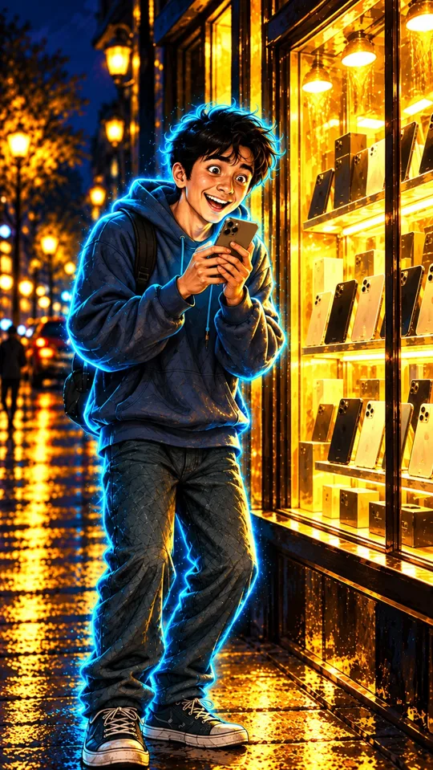
✅ tasdiqlandi · Apple belgilari tozalandi (img/s02.png)
Diyor yuzi namunadek (to'zg'igan soch, katta ko'zlar, xudi, moviy nur, sumka tasmasi), telefon ikki qo'lida. Ranglar: sariq, moviy. ChatGPT tahriri belgilarni olib tashlamadi; Claude vitrinadagi belgilarni o'zi tozaladi (OpenCV inpaint), qo'lidagi telefonda belgi yo'q. Veo'ga img/s02.png beriladi.
Ovoz
Diyor: Usta, oyiga atigi yuz ming ekan! Bemalol olaman.
Vertical 9:16, 8 seconds. Start from the attached image of scene 2. Camera: Handheld camera with a light natural bounce, slowly circling a little to the right around Diyor, keeping his face in frame. Action: Diyor bounces on his toes with joy, hugs the phone to his chest, then lifts it close to his face; his eyes go wide and shining, eyebrows jump up, a huge open grin, his cheeks round with happiness; his cyan-blue glow flickers brighter. Keep every character exactly as in the image for the whole clip: the same face, age, hair, beard, clothes, colours and props, the same number of arms and hands, young smooth hands. Keep the background, the colours and the painted illustration style exactly as in the image. Facial expressions are clear and alive (eyes, eyebrows, cheeks, head movement) but there is no dialogue and no lip-sync: mouths move only slightly. No new people, no extra objects, no brand logos on phones or boxes, no text, no letters, no numbers, no captions, no subtitles, no watermark. Only quiet ambient sound.
03
3-sahna — 9:16 (tik)
12–17 sto'q sariqqizil
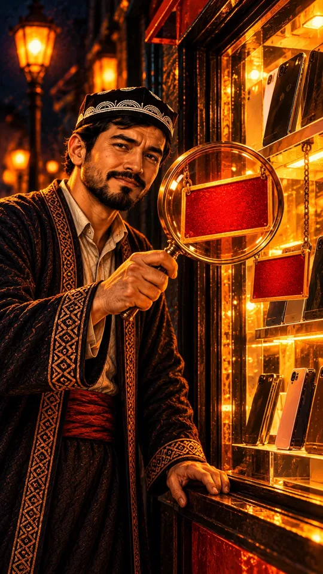
✅ tasdiqlandi (tahrirdan keyin) · Apple belgilari tozalandi (img/s03.png)
Kiyim, do'ppi, lupa, qizil yorliq, ranglar (to'q sariq, qizil) to'g'ri. Xato: ikkala qo'li qari (ajin, bo'rtgan tomirlar, chuqur bo'g'im chiziqlari), yuzida peshona ajinlari va ko'z atrofida chiziqlar — ~40 yoshdek. Tahrirdan keyin: ikkala qo'l yosh (silliq teri, tomir yo'q), yuz namunaga yaqin (qoshini ko'targani uchun peshonada yengil chiziq). 2 ta Apple belgisini Claude tozaladi. Veo'ga img/s03.png beriladi.
Vertical 9:16, 8 seconds. Start from the attached image of scene 3. Camera: Macro close-up with a slow rack focus: from the glowing red card seen through the magnifying glass to Usta's face behind it. Action: Usta slowly moves the magnifying glass closer to the red card; the red card grows larger in the lens; he squints one eye, raises one eyebrow high and gives a slow, suspicious little nod; warm orange street-lamp light flickers on his face. Keep every character exactly as in the image for the whole clip: the same face, age, hair, beard, clothes, colours and props, the same number of arms and hands, young smooth hands. Keep the background, the colours and the painted illustration style exactly as in the image. Facial expressions are clear and alive (eyes, eyebrows, cheeks, head movement) but there is no dialogue and no lip-sync: mouths move only slightly. No new people, no extra objects, no brand logos on phones or boxes, no text, no letters, no numbers, no captions, no subtitles, no watermark. Only quiet ambient sound.
04
4-sahna — 9:16 (tik)
17–25 sto'q ko'ksariq
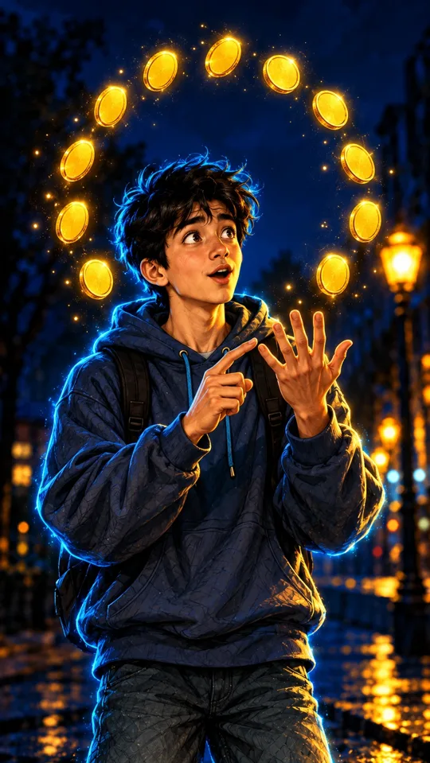
✅ tasdiqlandi (img/s04.png)
Diyor yuzi namunadek (to'zg'igan soch, katta ko'zlar, xudi, sumka, moviy nur). Qo'llar yosh: o'ng qo'lda 5 barmoq ochiq, chap qo'l ko'rsatkich barmog'i bilan sanaydi. Ranglar: ko'k, sariq. Tangalar 12 emas, 11 ta (boshi orqasida bo'shliq) — tomoshabin sanamaydi; Veo'da tangalar birma-bir yonadi, shu yashiradi. Telefon, belgi, yozuv yo'q.
Ovoz
Diyor: Yuz ming… o'n ikki oy… bir million ikki yuz ming.
Vertical 9:16, 8 seconds. Start from the attached image of scene 4. Camera: Slow 90-degree orbit around Diyor from his left side to the front, ending on a close-up of his face and fingers. Action: Diyor taps his fingers one by one, counting; with every tap one more golden coin around his head lights up brighter; his lips count silently; at the end his eyebrows shoot up, his eyes go very wide and his jaw drops slowly in surprise; he freezes with his fingers in the air. Keep every character exactly as in the image for the whole clip: the same face, age, hair, beard, clothes, colours and props, the same number of arms and hands, young smooth hands. Keep the background, the colours and the painted illustration style exactly as in the image. Facial expressions are clear and alive (eyes, eyebrows, cheeks, head movement) but there is no dialogue and no lip-sync: mouths move only slightly. No new people, no extra objects, no brand logos on phones or boxes, no text, no letters, no numbers, no captions, no subtitles, no watermark. Only quiet ambient sound.
05
5-sahna — 9:16 (tik)
25–30 ssariqqizil
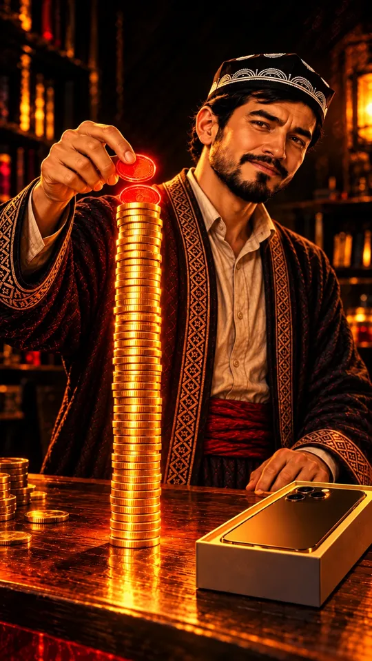
✅ qabul qilindi (tahrirdan keyin, img/s05.png)
Yuz namunaga yaqin, do'ppi, chopon, belbog' to'g'ri. 2 ta qizil tanga ustun tepasida, ustun telefon qutisidan baland. Ranglar: sariq, qizil. Qutidagi telefonda belgi yo'q. Kamchilik: tangani ushlagan o'ng qo'l va peshtaxtadagi chap qo'lda bo'g'imlar chuqur burishgan, 30 yoshdan qariroq. Tahrirdan keyin (v2) teri biroz silliqlashdi, bo'g'im burmalari kamaydi, lekin to'liq yo'qolmadi — 7-sahnadagi qo'l bilan bir xil darajada, qabul qilindi.
Ovoz
Usta: Bunga boshlang'ich to'lov, xizmat haqi qo'shilsa-chi?
Vertical 9:16, 8 seconds. Start from the attached image of scene 5. Camera: Low-angle shot, slow crane up along the tall golden coin column, ending on Usta's face above it. Action: speed ramp: Usta lets the glowing red coin go; it falls onto the top of the column in extreme slow motion, turning and catching the light, and lands with a crisp clink and a few tiny red sparks; normal speed resumes; the column wobbles slightly; Usta looks into the camera and raises his eyebrows meaningfully, a small knowing smile. Keep every character exactly as in the image for the whole clip: the same face, age, hair, beard, clothes, colours and props, the same number of arms and hands, young smooth hands. Keep the background, the colours and the painted illustration style exactly as in the image. Facial expressions are clear and alive (eyes, eyebrows, cheeks, head movement) but there is no dialogue and no lip-sync: mouths move only slightly. No new people, no extra objects, no brand logos on phones or boxes, no text, no letters, no numbers, no captions, no subtitles, no watermark. Only quiet ambient sound.
06
6-sahna — 9:16 (tik)
30–37 ssariqto'q ko'k
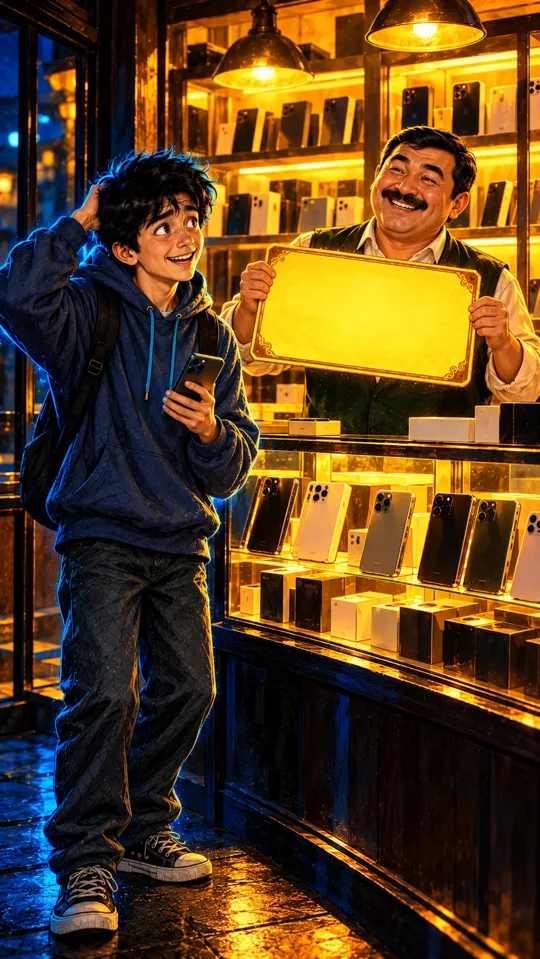
✅ tasdiqlandi · Apple belgilari tozalandi (img/s06.png)
Diyor yuzi namunadek, bir qo'li boshida, biri telefonda; nuri xira. Ifodasi «uyalib jilmayish» (to'liq uyalgan emas) — Veo promptida uyalib pastga qarashi yoziladi. Sotuvchi: yumaloq yuz, qalin mo'ylov, yashil jilet, yuzi Usta va Diyornikidan butunlay boshqa; yorliqni ikki qo'llab ushlagan, yorliq bo'sh. Ranglar: sariq, ko'k. Pastki javondagi 11 ta Apple belgisi va mayda yozuvni Claude tozaladi.
Ovoz
Diyor: Sotuvchi faqat oylik to'lovni aytdi. Naqd narxini so'ramabman.
Kamera: yon tomonga suzishVeo prompti (9:16, 8 s) — Veo'ga yuqoridagi rasmni yuklang
Vertical 9:16, 8 seconds. Start from the attached image of scene 6. Camera: Smooth lateral dolly (truck) left from the smiling seller behind the counter to Diyor in the foreground, ending in a medium close-up of Diyor. Action: the seller grins widely and wiggles the big golden card toward Diyor; Diyor scratches the back of his head, his smile fades into an awkward embarrassed smile, he lowers his eyes to the floor, his cheeks blush and his cyan glow dims; he shrugs one shoulder. Keep every character exactly as in the image for the whole clip: the same face, age, hair, beard, clothes, colours and props, the same number of arms and hands, young smooth hands. Keep the background, the colours and the painted illustration style exactly as in the image. Facial expressions are clear and alive (eyes, eyebrows, cheeks, head movement) but there is no dialogue and no lip-sync: mouths move only slightly. No new people, no extra objects, no brand logos on phones or boxes, no text, no letters, no numbers, no captions, no subtitles, no watermark. Only quiet ambient sound.
07
7-sahna — 9:16 (tik)
37–44 ssariqqizilto'q ko'k
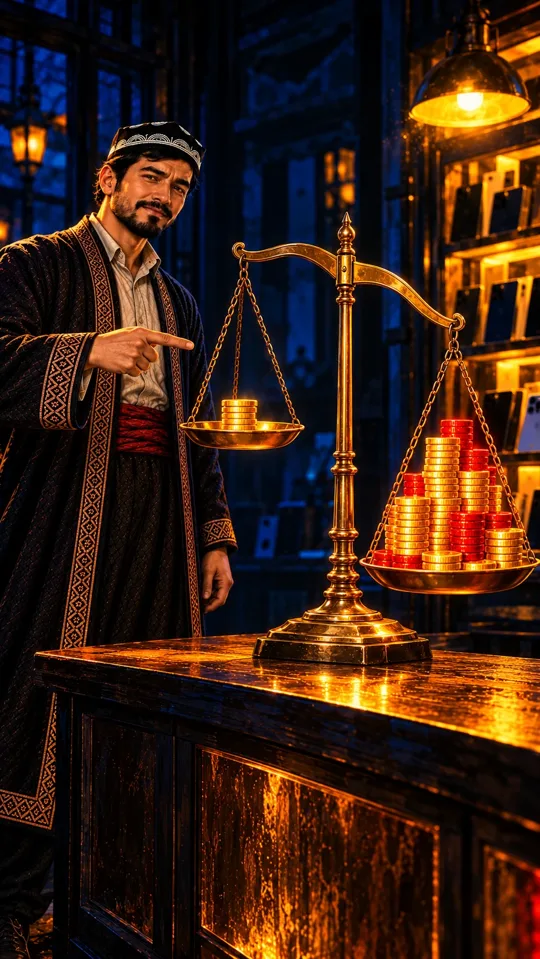
✅ tasdiqlandi (img/s07.png)
Usta yuzi namunadek. Tarozi: chap pallada kichik oltin ustun (naqd narx), o'ng pallada katta oltin+qizil uyum, o'ng palla pastroq. O'ng qo'li taroziga ishora qiladi, chap qo'li pastda; qo'llar yosh (barmoq bukilganda bo'g'imda oddiy burmalar). Ranglar: sariq, qizil, ko'k. Orqadagi telefonlarda belgi ko'rinmaydi.
Ovoz
Usta: Kichik bo'lingan narx katta summani yashiradi. Ikkalasini yonma-yon qo'y.
Vertical 9:16, 8 seconds. Start from the attached image of scene 7. Camera: Slow pull-back from a close-up of the heavy right pan to a medium shot showing the whole scale and Usta. Action: the right pan with the big golden and red pile sinks a little lower with a heavy clunk while the left pan with the small stack rises; Usta points from the small stack to the big pile, turns to the camera and nods slowly, eyebrows raised, a calm serious look. Keep every character exactly as in the image for the whole clip: the same face, age, hair, beard, clothes, colours and props, the same number of arms and hands, young smooth hands. Keep the background, the colours and the painted illustration style exactly as in the image. Facial expressions are clear and alive (eyes, eyebrows, cheeks, head movement) but there is no dialogue and no lip-sync: mouths move only slightly. No new people, no extra objects, no brand logos on phones or boxes, no text, no letters, no numbers, no captions, no subtitles, no watermark. Only quiet ambient sound.
08
8-sahna — 9:16 (tik)
44–54 ssariqto'q ko'kqizil
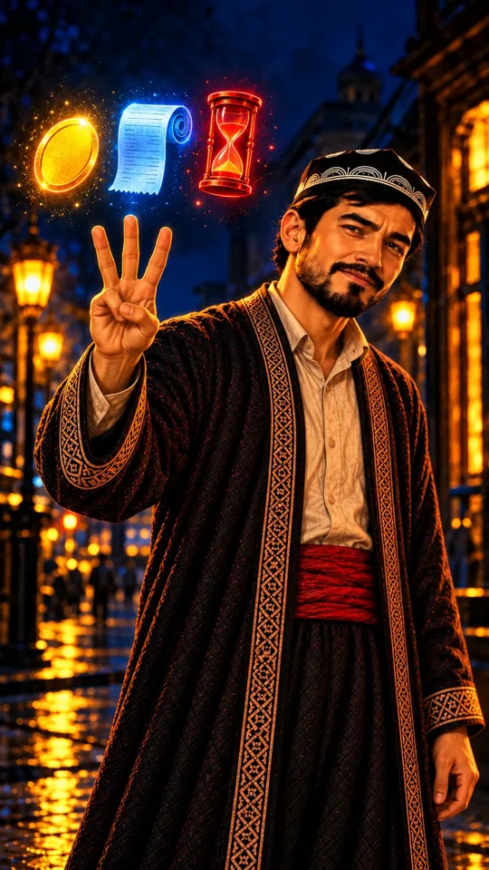
✅ tasdiqlandi (img/s08.png)
Usta yuzi namunadek. O'ng qo'lda aniq 3 barmoq ochiq (bosh barmoq jimjiloqni ushlagan), chap qo'l pastda; ikkalasi yosh. Tepada 3 belgi: sariq tanga, ko'k chek (o'qib bo'lmaydigan chiziqlar, harf yo'q), qizil qum soat. Ranglar: sariq, ko'k, qizil.
Ovoz
Usta: Uchta savol ber. Naqd narxi qancha? Jami qancha to'layman? Kechiksam nima bo'ladi?
Vertical 9:16, 8 seconds. Start from the attached image of scene 8. Camera: Slow arc (orbit) of about 30 degrees to the right around Usta, ending in a medium close-up with the three symbols above his hand. Action: Usta raises his hand with three fingers; the golden coin, the blue receipt and the red hourglass pulse brightly one after another, left to right, and with each pulse Usta gives a small firm nod and his eyebrows lift; at the end he looks straight into the camera with a confident, caring look. Keep every character exactly as in the image for the whole clip: the same face, age, hair, beard, clothes, colours and props, the same number of arms and hands, young smooth hands. Keep the background, the colours and the painted illustration style exactly as in the image. Facial expressions are clear and alive (eyes, eyebrows, cheeks, head movement) but there is no dialogue and no lip-sync: mouths move only slightly. No new people, no extra objects, no brand logos on phones or boxes, no text, no letters, no numbers, no captions, no subtitles, no watermark. Only quiet ambient sound.
09
9-sahna — 9:16 (tik)
54–58 smoviysariq
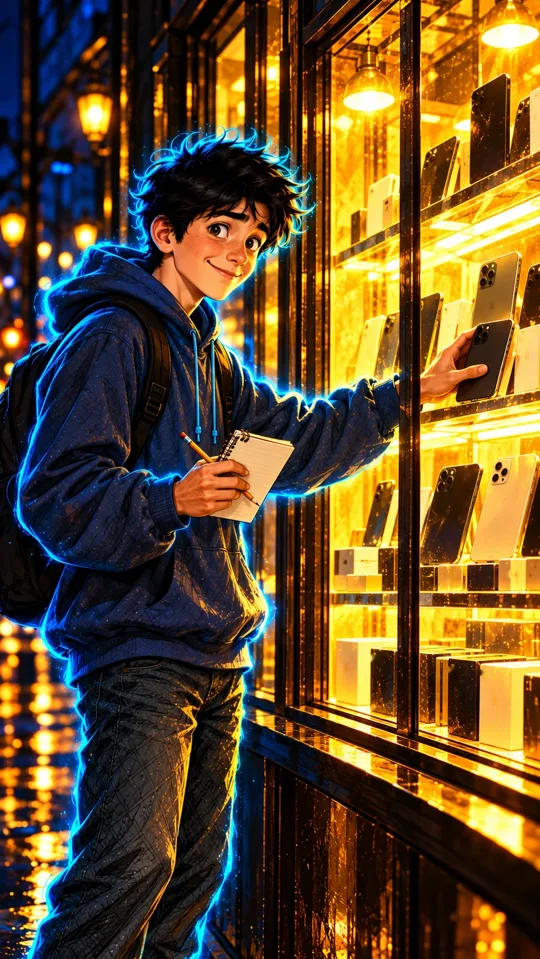
✅ tasdiqlandi · Apple belgilari tozalandi (img/s09.png)
Diyor yuzi namunadek, xotirjam ayyorona tabassum. Bir qo'li telefonni javonga qo'yadi, biri daftar va qalam ushlagan; nuri yorqin. Ranglar: sariq, ko'k. Vitrinadagi 11 ta Apple belgisi va mayda yozuvni Claude tozaladi.
Ovoz
Diyor: Shoshilmayman. Avval hisoblab ko'raman.
Kamera: yon tomonga + yaqinlashishVeo prompti (9:16, 8 s) — Veo'ga yuqoridagi rasmni yuklang
Vertical 9:16, 8 seconds. Start from the attached image of scene 9. Camera: Smooth lateral dolly (truck) right following Diyor's hand as he puts the phone back on the shelf, then a slight push-in to his face. Action: Diyor calmly puts the phone back on the glowing shelf and lets it go; he turns to the camera with a relaxed, clever smile and a confident little nod, taps the pencil on his notebook and writes a line; his cyan-blue glow becomes bright and steady. Keep every character exactly as in the image for the whole clip: the same face, age, hair, beard, clothes, colours and props, the same number of arms and hands, young smooth hands. Keep the background, the colours and the painted illustration style exactly as in the image. Facial expressions are clear and alive (eyes, eyebrows, cheeks, head movement) but there is no dialogue and no lip-sync: mouths move only slightly. No new people, no extra objects, no brand logos on phones or boxes, no text, no letters, no numbers, no captions, no subtitles, no watermark. Only quiet ambient sound.
10
10-sahna — 9:16 (tik)
58–65 sto'q sariqto'q ko'k
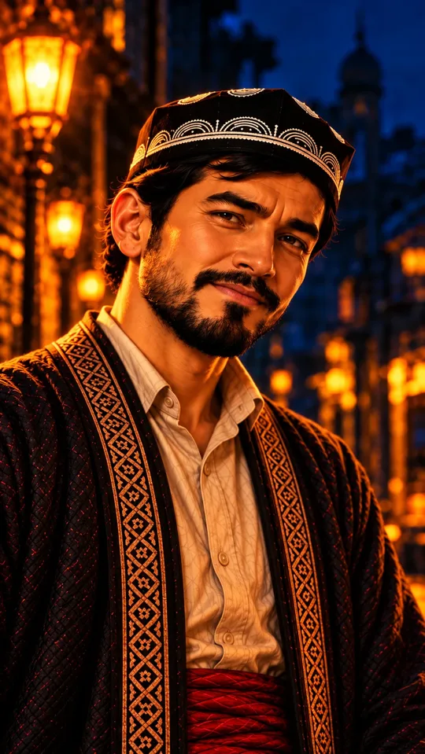
✅ tasdiqlandi (img/s10.png)
Usta yaqin planda, yuzi namunadek, iliq tabassum. Qo'llari kadrda yo'q. Ranglar: to'q sariq (yuzning bir tomoni), to'q ko'k (orqa fon).
Ovoz
Usta: «Oyiga atigi» degandan keyin bitta savol qoladi: oxirida jami qancha?
Kamera: juda sekin yaqinlashish (ko'zlar)Veo prompti (9:16, 8 s) — Veo'ga yuqoridagi rasmni yuklang
Vertical 9:16, 8 seconds. Start from the attached image of scene 10. Camera: Very slow push-in from a close-up to an extreme close-up of Usta's eyes. Action: Usta looks straight into the camera, tilts his head slightly, his eyes soften and crinkle into a warm wise smile, then his eyebrows rise slowly as if asking a question; the orange street-lamp light flickers gently on one side of his face, deep blue on the other. Keep every character exactly as in the image for the whole clip: the same face, age, hair, beard, clothes, colours and props, the same number of arms and hands, young smooth hands. Keep the background, the colours and the painted illustration style exactly as in the image. Facial expressions are clear and alive (eyes, eyebrows, cheeks, head movement) but there is no dialogue and no lip-sync: mouths move only slightly. No new people, no extra objects, no brand logos on phones or boxes, no text, no letters, no numbers, no captions, no subtitles, no watermark. Only quiet ambient sound.
11
11-sahna — 9:16 (tik)
65–76 sto'q ko'ksariqzumrad
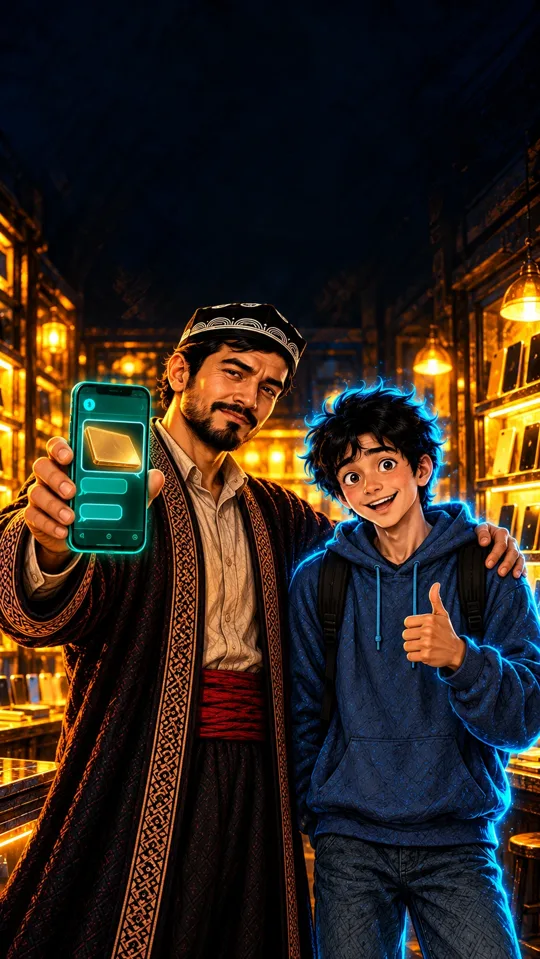
✅ tasdiqlandi (img/s11.png)
Usta o'ng qo'lida telefon (ekran zumrad, oltin yorliq surati va bo'sh xabar pufakchalari, yozuv yo'q), chap qo'li Diyorning yelkasida; Diyor bosh barmog'ini ko'taradi. Ikkala yuz namunadek (Diyor biroz multfilmroq, lekin o'sha qahramon). Qo'llar yosh. Tepada sarlavha uchun bo'sh qorong'i joy bor — montajda katta @sahiychishopbot. Ranglar: ko'k, sariq, zumrad.
Ovoz
Usta: Narx yorlig'i yoki shartnoma suratini botimizga yuboring: @sahiychishopbot…
Vertical 9:16, 8 seconds. Start from the attached image of scene 11. Camera: Slow dolly out and crane up, ending in a medium wide shot with empty dark space in the top third of the frame. Action: Usta pushes the glowing teal phone toward the camera and the chat bubbles on the screen pulse softly; with his other hand he gives Diyor's shoulder a friendly squeeze; Diyor grins, bounces once and pumps his thumb up; both look into the camera with happy, confident faces. Keep every character exactly as in the image for the whole clip: the same face, age, hair, beard, clothes, colours and props, the same number of arms and hands, young smooth hands. Keep the background, the colours and the painted illustration style exactly as in the image. Facial expressions are clear and alive (eyes, eyebrows, cheeks, head movement) but there is no dialogue and no lip-sync: mouths move only slightly. No new people, no extra objects, no brand logos on phones or boxes, no text, no letters, no numbers, no captions, no subtitles, no watermark. Only quiet ambient sound.